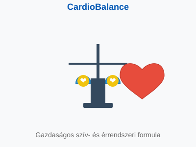

Köszönjük érdeklődését termékünk iránt! Átirányítjuk a hivatalos weboldalra, ahol további információkat találhat és megrendelheti a terméket.
Ha nem történik automatikus átirányítás, kattintson az alábbi gombra:
Tovább a hivatalos oldalra